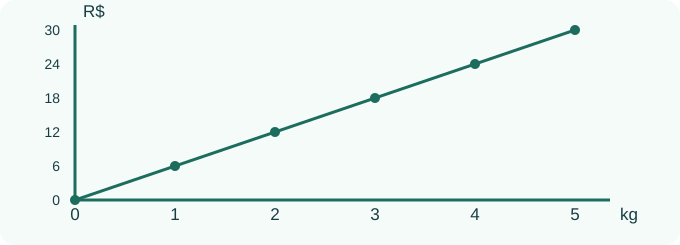
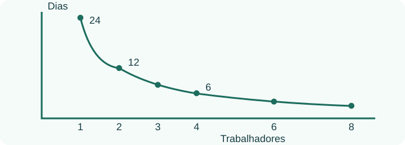

Preparação para o Vestibulinho ETEC · Módulo 03. Estude os conceitos, acompanhe os exemplos linha por linha e faça a fixação antes de passar ao próximo tópico.
Razão é uma divisão na ordem indicada pelo enunciado. Para comparar desempenhos com totais diferentes, compare frações ou percentuais, não quantidades absolutas. A razão pode ter unidade (km/h, R$/kg).
R = ab (b ≠ 0)
Exemplo resolvido
15 meninos e 20 meninas: razão meninos/meninas e meninos/total.
1520 = 34.
Total = 15 + 20 = 35.
1535 = 37.
Cuidado: A ordem importa: meninos/meninas não é meninos/total.
Exercício de fixação
Fixação 01 · autoral
Uma prova de 90 candidatos teve 30 aprovados. Calcule reprovados/aprovados.
Confira também o desenvolvimento no gabarito; respostas em formatos equivalentes podem exigir conferência manual.
Proporção é igualdade entre duas razões. Denominadores devem ser não nulos. Em a/b = c/d, o produto dos extremos é igual ao produto dos meios. Quando há frações complexas, simplifique antes.
ab = cd ⇒ a × d = b × c
Exemplo resolvido
Resolva 2/3 = (4 + x)/(7 + x).
2(7 + x) = 3(4 + x).
14 + 2x = 12 + 3x.
14 − 12 = 3x − 2x.
x = 2 (denominador 9 ≠ 0).
Cuidado: Distribua o número para todos os termos do parêntese.
Exercício de fixação
Fixação 02 · autoral
Resolva 75 = 15/(2x).
Confira também o desenvolvimento no gabarito; respostas em formatos equivalentes podem exigir conferência manual.
Uma razão 3:1 representa quatro partes iguais ao todo. Some os termos da razão, divida o total pelo número de partes e multiplique pela quantidade correspondente.
a = mm+n × T; b = nm+n × T
Divisão de 36 fitas na razão 3:1.
Exemplo resolvido
36 fitas: para cada 3 brasileiras há 1 estrangeira.
3 + 1 = 4 partes.
36 ÷ 4 = 9 por parte.
3 × 9 = 27 brasileiras.
1 × 9 = 9 estrangeiras.
Cuidado: Não divida o total por apenas 3.
Exercício de fixação
Fixação 03 · autoral
Divida R$ 600 na razão 2:3.
Confira também o desenvolvimento no gabarito; respostas em formatos equivalentes podem exigir conferência manual.
Escala é a razão entre medida do desenho e medida real, na mesma unidade. Ampliação proporcional mantém a relação entre os comprimentos. Áreas mudam pelo quadrado do fator de escala.
E = desenhoreal; k = novo comprimentoantigo comprimento
Exemplo resolvido
Uma gravura de 20 cm × 35 cm é ampliada para 1,2 m de largura.
1,2 m = 120 cm.
k = 120 ÷ 20 = 6.
35 × 6 = 210 cm.
210 cm ÷ 100 = 2,1 m.
Cuidado: Converta unidades antes de formar a razão.
Exercício de fixação
Fixação 04 · autoral
Em uma planta, 5 cm representam 100 m. Qual a escala?
Confira também o desenvolvimento no gabarito; respostas em formatos equivalentes podem exigir conferência manual.
Se uma grandeza dobra e a outra também dobra, mantendo a razão constante, são diretamente proporcionais. Faça a tabela com unidades iguais e multiplique em cruz.
a₁a₂ = b₁b₂

Proporcionalidade direta: cada kg custa R$ 6; gráfico passa pela origem.
Exemplo resolvido
Uma máquina produz 120 peças em 3 h. Quantas em 8 h?
3 h → 120 peças
8 h → x peças.
38 = 120x.
3x = 8 × 120 = 960.
x = 960 ÷ 3 = 320 peças.
Cuidado: Crescer junto não basta: a razão deve ser constante.
Exercício de fixação
Fixação 05 · autoral
4 pessoas consomem 300 g de farinha. Para 10 pessoas, mantendo a proporção, quanto é preciso?
Confira também o desenvolvimento no gabarito; respostas em formatos equivalentes podem exigir conferência manual.
Mantendo o trabalho ou a distância constantes, mais trabalhadores ou maior velocidade podem reduzir o tempo proporcionalmente. O produto entre as grandezas fica constante. Inverta uma razão na montagem.
a₁ × b₁ = a₂ × b₂

Trabalho fixo de 24 trabalhador-dias: mais trabalhadores, menos dias.
Exemplo resolvido
4 trabalhadores fazem uma obra em 12 dias. Quanto tempo levam 6, com produtividade igual?
4 × 12 = 6 × x.
48 = 6x.
x = 48 ÷ 6 = 8 dias.
Cuidado: Não use a regra direta quando dobrar uma grandeza reduz a outra à metade.
Exercício de fixação
Fixação 06 · autoral
8 funcionários fazem uma tarefa em 15 dias. Quanto tempo levam 12?
Confira também o desenvolvimento no gabarito; respostas em formatos equivalentes podem exigir conferência manual.
Velocidade escalar média é distância total dividida pelo tempo total. Use unidades compatíveis. 1 km = 1.000 m, 1 h = 60 min = 3.600 s; de km/h para m/s divida por 3,6.
v = dt; t = dv; d = v × t
Exemplo resolvido
Um barco percorre 12 km a 5 m/s. Quanto tempo leva?
12 km = 12.000 m.
t = 12.000 ÷ 5 = 2.400 s.
2.400 ÷ 60 = 40 min.
Cuidado: Não divida quilômetros por m/s sem converter.
Exercício de fixação
Fixação 08 · autoral
Um carro percorre 180 km em 3 h. Qual a velocidade média em km/h e m/s?
Confira também o desenvolvimento no gabarito; respostas em formatos equivalentes podem exigir conferência manual.
🔽 Ver gabarito comentado
Resposta: 60 km/h e 16,67 m/s
180 ÷ 3 = 60 km/h.
60 ÷ 3,6 ≈ 16,67 m/s.
Continue praticando
REVISÃO
Resolva as questões reais e complementares do módulo e confira cada etapa da resolução.